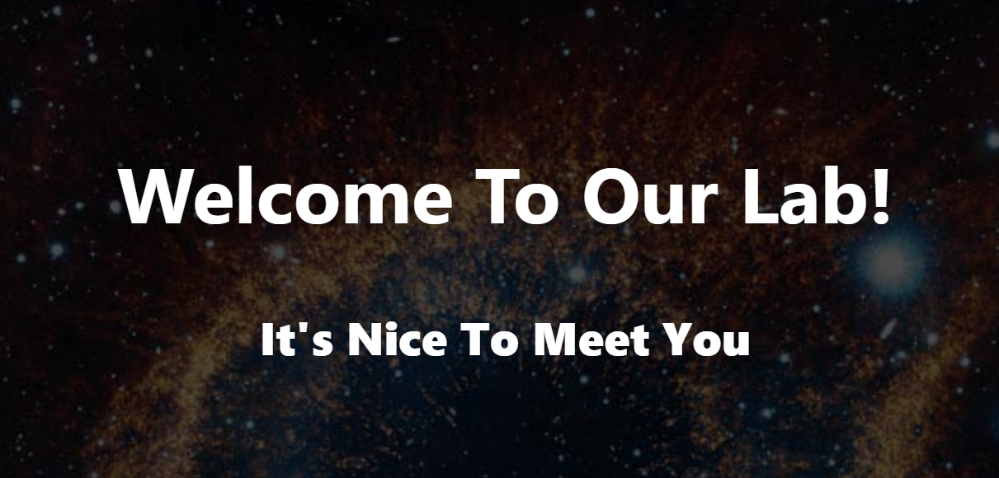
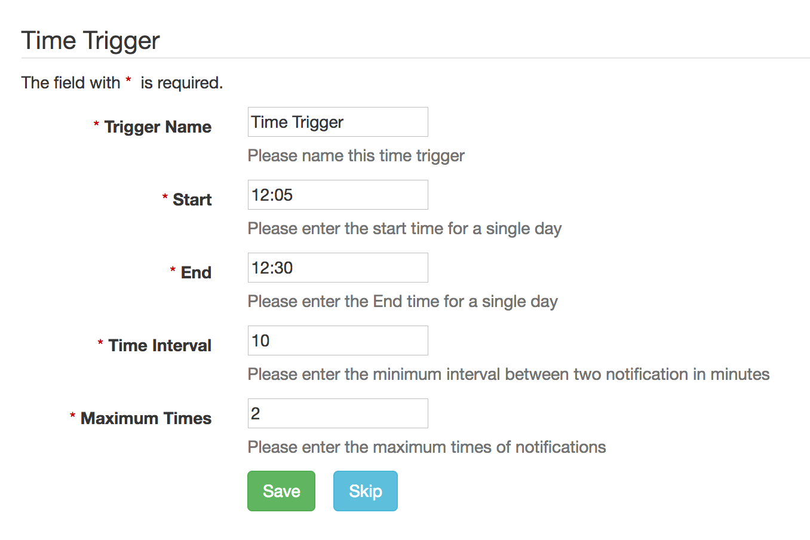
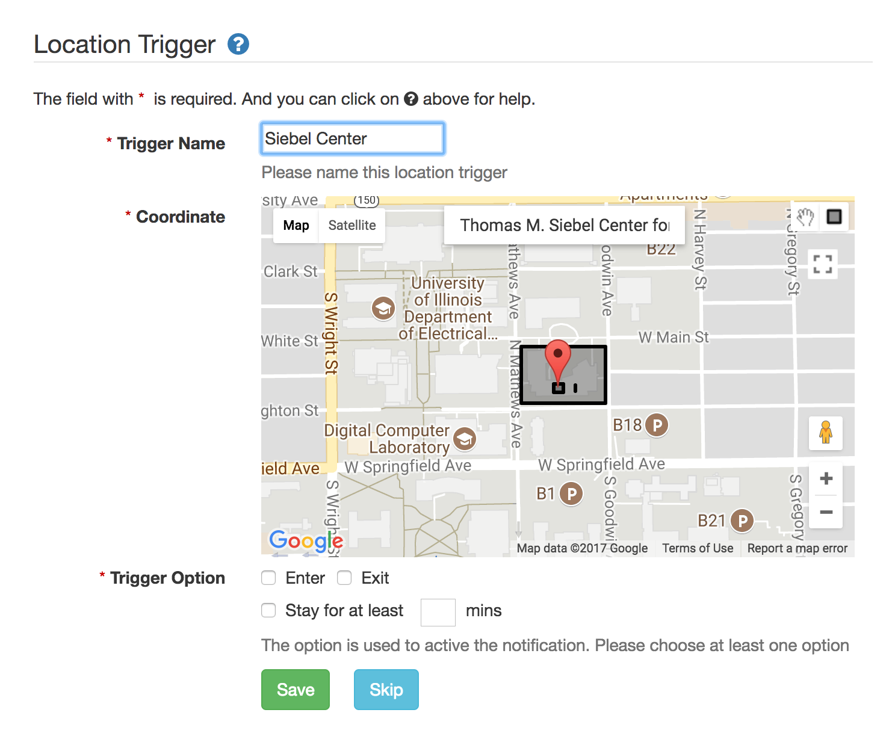
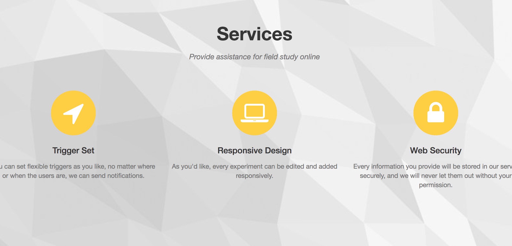
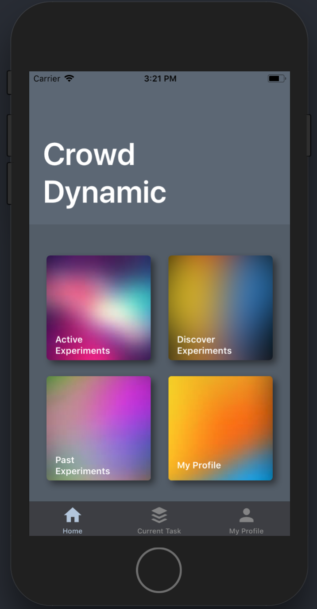

Crowd Dynamic Lab at University of Illinois at Urbana-Champaign

We designed and developed a web-mobile based reserach platfrom for conducting large scale field experiment. The major questions we are trying to
answer are 1) How can we collect people's behavior information by modern technology? 2) Can these feedbacks promote personal decision making in
daily life? This platform can lower the barrier for conducting large scale field experiment for researchers from different fields, such as Computer Science,
Advertising and Psychology. Researchers can specify certain time or location triggers for collecting data under specific real life scenario.
Our reserach platform consists two major components 1) A web-based interface for reseracher to set up an experiment. 2) A mobile application for data collection.
If you are interested to use the research platform or for future updates, please contact zxiao5@illinois.edu
Time Trigger

The time trigger allows the researcher to specify when and how often the data can be collected. Once the time trigger is triggered, the participant will receive a notification which will lead them to a task/message/survey specified by the researcher.
Location Trigger

The location trigger is trigger by a geological fence system. On the website, the researcher can mark an area on the map as a trigger and set up the condition for triggering the notification. The conditions include entering, existing or staying for certain minutes.
Randomization & Task Flow

The location trigger is trigger by a geological fence system. On the website, the researcher can mark an area on the map as a trigger and set up the condition for triggering the notification. The conditions include entering, existing or staying for certain minutes.
Experiment Market

To maximizing the exposure of the experiment and reach the most diverse sample, once the researcher published the experiment, the experiment will show up on the mobile app for all users. The researcher could set the criteria for targeting a specific group. If the researcher wants to recruit their participants, an invitation code can be set for accessing the experiment.